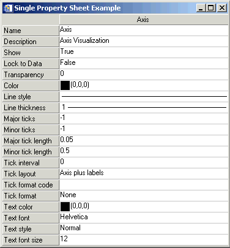

A property sheet consists of rows and columns. The left-most column identifies the properties, and the other column or columns identify the property values of one or more objects (also known as components). A select event is generated whenever a cell containing a property name or a property value is selected by left-clicking on it using the mouse. When a single property value is clicked on, the associated property name appears indented. Only a single property value can be selected at one time. However, when the MULTIPLE_PROPERTIES keyword is set, multiple properties can be selected in a property sheet using the Ctrl key to make nonadjacent selections --or using the Shift key to make adjacent selections.
Note: Setting the EDITABLE keyword to 0 (zero) allows the user to select, but not modify properties. See WIDGET_PROPERTYSHEET for details.
|
 |
When the property sheet is initially realized, no properties are selected by default. However a single property or multiple properties can be selected programmatically using the PROPERTYSHEET_SETSELECTED keyword to the WIDGET_CONTROL procedure.
Set the PROPERTYSHEET_SETSELECTED keyword to a string or an array of strings identifying the properties to appear selected. The strings should match valid property identifiers. When this keyword is set to an empty string or an array that contains only an empty sting, it clears all property selections. For example, the following code pre-selects two properties in a property sheet:
; Create the property sheet.
oComp = OBJ_NEW('IDLitVisAxis')
wPropAxis = WIDGET_PROPERTYSHEET(base, VALUE = oComp, $
EVENT_PRO = 'PropertyEvent', UNAME = 'PropSheet', $
/MULTIPLE_PROPERTIES)
; Pre-select the color and transparency properties of
; axis component.
WIDGET_CONTROL, wPropAxis,
PROPERTYSHEET_SETSELECTED=['Color', 'Transparency']
The event structure (WIDGET_PROPSHEET_SELECT) provided when selection occurs contains a COMPONENT tag, an IDENTIFIER tag, and a NSELECTED tag.
{WIDGET_PROPSHEET_SELECT, ID:0L, TOP:0L, HANDLER:0L, TYPE:0L,
COMPONENT:OBJREF, IDENTIFIER:"", NSELECTED:0L }
The COMPONENT tag is a reference to the object associated with the selected property value. When multiple objects (also known as components) are associated with the property sheet, this member indicates which one object had one of its property values selected. If a property (instead of a property value) is selected, the COMPONENT tag always contains an object reference to the first object, even if there are multiple objects in the property sheet. The IDENTIFIER tag uniquely identifies the property. This identifier is unique among all of the component’s properties. The component and identifier can be used to obtain the value of the selected property:
isDefined = event.component-> $
GetPropertyByIdentifier(event.identifier, value)
where event is the event structure, isDefined is a 1 if the value is defined (0, otherwise), and value receives the property’s value.
The NSELECTED tag returns the number of currently selected properties. When more than a single property is selected, the IDENTIFIER field holds the identifier of the first item selected. This is not the first item selected with the mouse, but the first item encountered in the property sheet definition among those which are selected. The NSELECTED tag is equivalent to calling WIDGET_INFO with the /PROPERTYSHEET_NSELECTED keyword.
Using WIDGET_INFO, it is also possible to return the identifiers of all selected properties using the /PROPERTYSHEET_SELECTED keyword. This returns a string or string array containing the identifiers of the selected properties.
; Return information about single or multiple property
; selections.
vNumSelected = WIDGET_INFO(event.ID, /PROPERTYSHEET_NSELECTED)
vSelected = WIDGET_INFO(event.ID, /PROPERTYSHEET_SELECTED)
PRINT, 'Number properties selected: ' + STRING(vNumSelected)
PRINT, 'Selected properties: '
PRINT, vSelected
Three things that determine the appearance of a property sheet data cells. They are, in order of greatest to least precedence: